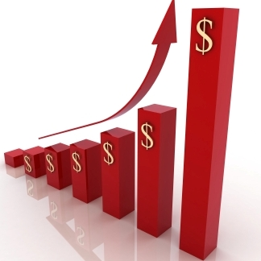

Compania Green World are loc pentru fiecare doritor, indiferent de intenţii. Persoanele care accesează acest site acum, ar putea fi împărţite în 2 categorii.
În prima categorie sunt cei care ar dori să devină consumatori, pentru că au înţeles că au nevoie de produsele Green World pentru menţinerea sănătăţii. Astfel, semnând un acord de 300 lei (15 PV) cu compania, ei primesc:
a) Un număr de înregistrare.
b) Literatura despre companie, produse şi veniturile posibile.
d) Dreptul gratuit la instruire, dacă ai dorinţa de a cunoaşte mai multe despre sănătatea ta sau de a deveni un profesionist în vînzări.
Şi asta nu e tot. În afară de aceste 25%, mai puteţi beneficia de întoarceri băneşti de încă 15-30% drept remunerare directă (în bani gheaţă la sfîrşitul lunii, nu în certificate sau marfă ca la alte companii). Deci, investind 210 lei, puteţi practic achiziţiona produsele Green World la un preţ foarte redus. Nu vreau să vă plictisesc cu diverse scheme, totul este destul de simplu. Dacă aveţi dorinţa de a semna un astfel de acord, contactaţi-mă şi vă ofer cu plăcere orice explicaţii asupra la cum se poate de avut o întoarcere bănească de jumătate din valoarea produsului.
În plus, datorită faptului că compania Green World este relativ nouă pe piaţa noastră, ea are o politică promoţională foarte avantajoasă. Chiar în perioada aceasta compania oferă multe cadouri. Şi nu doar produsele sale, ci poţi cîştiga un aparat de fotografiat, un laptop, o maşină, sau chiar o călătorie în China.

A doua categorie o reprezintă persoanele care vin în compania Green World nu doar pentru consumul produselor naturale de elită la un preţ redus, ci cu un scop financiar: să-şi deschidă propria afacere în cadrul acestei corporaţii multinaţionale. Probabil fiecare din noi doreşte să-şi stabilească propriile ore de muncă, să lucreze pentru sine şi nu pentru altcineva (şef, stăpîn, director, spuneţi-i cum doriţi). Compania are un plan de marketing uşor de înţeles chiar şi celor fără educaţie economică. Spre deosebire de alte afaceri, o afacere în cadrul companiei Green World posedă mai multe avantaje:
a) Lipsa riscului. Corporaţia Green World este una multinaţională, în Republica Moldova ea este înregistrată legal şi are toate certificatele de calitate înregistrate. La orice altă afacere ar fi trebuit să umbli cu documente şi hîrtii la diferite instanţe pentru a-ţi înregistra businessul. La Green World e simplu - semnezi doar un acord cu compania. E acelaşi acord în valoare de 210 lei şi beneficiezi de aceleaşi privilegii ca cei din categoria întîi, doar mentalitatea ta e alta:nu doar consumi produsele Green World, dar dezvolți propria afacere.
b) Piaţă largă de desfacere. Compania este relativ nouă în Moldova, cu doar 3 ani de activitate. Deci este puţin cunoscută şi este şansa ta de a cuceri piaţa. În comparaţie cu Avon sau Oriflame, care activează de ani de zile şi distribuitorii săi sunt la fiecare colţ, compania Green World e abia la început de drum în Moldova (în alte regiuni ca S.U.A, China şi Africa ea deja a cucerit piaţa). În plus, produsele sale nu sunt concurente cu cele menţionate mai sus, produsele Green World fiind produse de profilactică şi de menţinere a sănătăţii.
Eşti interesat de aşa o idee de afaceri? Contactează-ne folosind datele de contact de pe pagină.